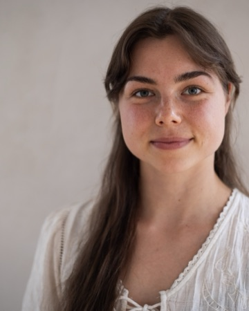

Emily Müller
Breathwork & traumasensible Atembegleitung
Ausgebildet in traumasensibler Atemarbeit nach dem Qualitätsstandard von Art of Breath (bei Daniel Alan), mit Weiterbildungen in fortgeschrittener Prozessbegleitung und intrapsychischer Anteilearbeit. Schwerpunkte: der verbundene Atem, das Nervensystem und frühkindliche Prägungen.